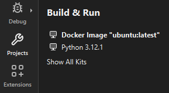

Build for and run on Docker devices
Note: Enable the Docker plugin to use it.
To specify build settings for Docker images:
- Open a project for an application you want to develop for the device.
- Go to Projects > Build & Run, and activate the kit for Docker devices.

A Docker device kit in Build & Run
Go to Run Settings to specify run settings. Usually, you can use the default settings.
See also Enable and disable plugins, How To: Develop for Docker, and How To: Manage Kits.